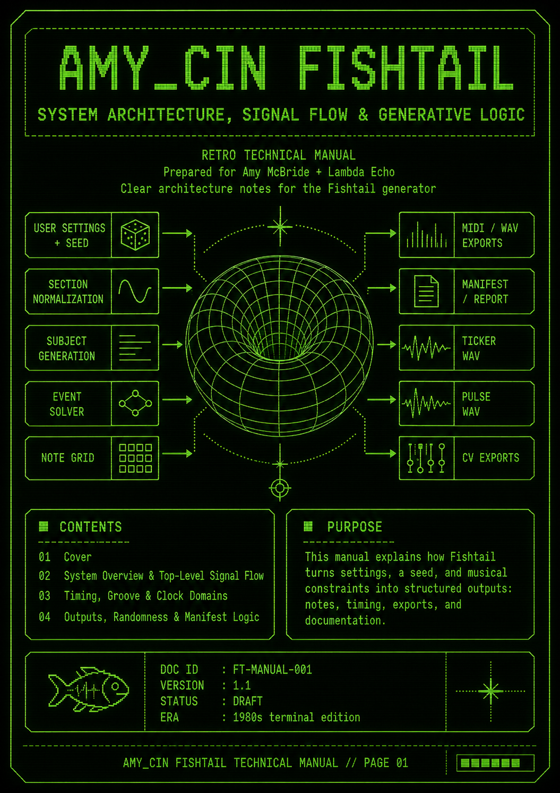
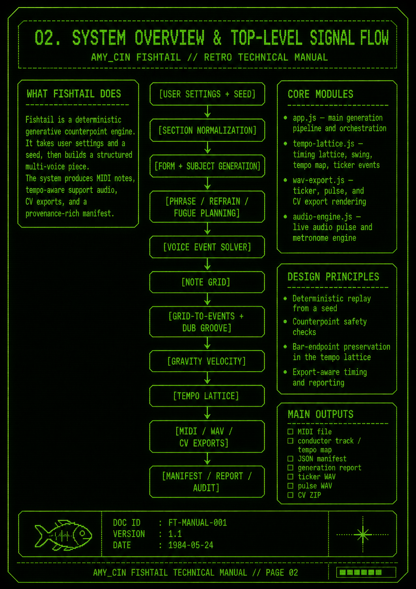
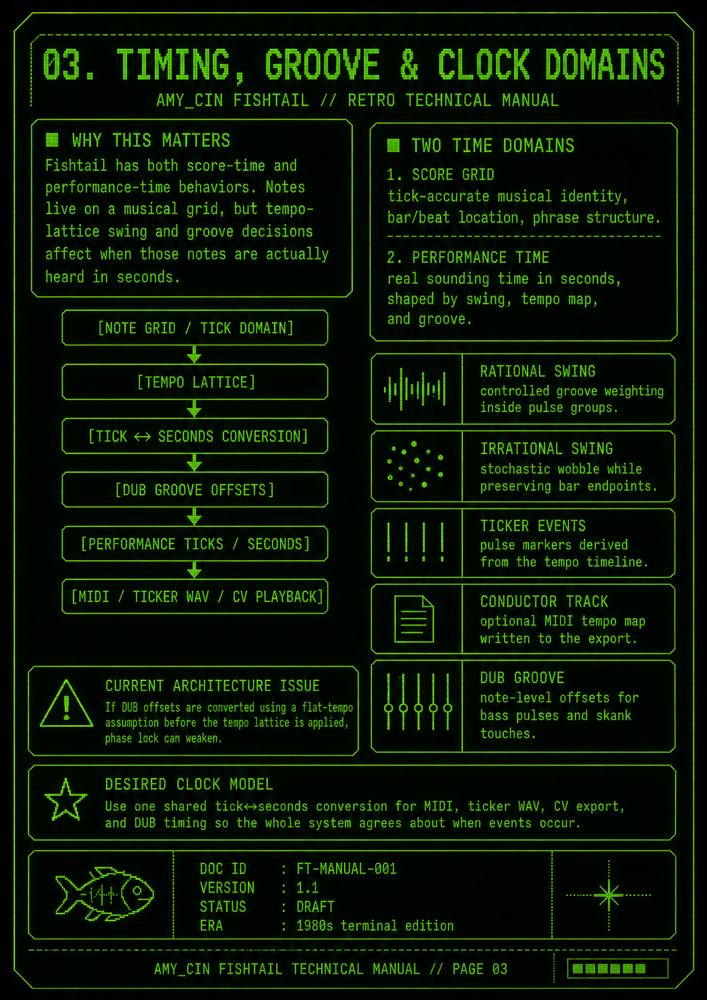
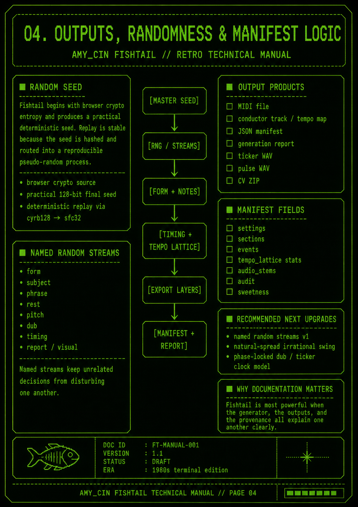

amy_cin fishtail generator // user guide
Fishtail Manual
A practical guide to generating pieces, understanding the timing and tuning systems, and reading the outputs Fishtail creates.
Quick Start
- Choose or roll a form with the D4 or D20 controls.
- Pick the style: Imitation + Invention, Counterpoint, or Fishtail Fugue.
- Set voices, breathing, density, rhythm motion, tuning mode, and Dub Gravity.
- Use Pulse + Time when you want reference audio, tempo lattice, or CV support.
- Press Generate + Save MIDI.
- Save the project JSON if you want exact seed-and-settings replay.
What You Get
- MIDI voice tracks, plus an optional conductor track for tempo data.
- A JSON manifest with seed, random model, timing model, sections, events, tuning, audit, and export metadata.
- A generation report with form notes, checker notes, and musical summaries.
- Optional Teardrop Pulse WAV, ticker WAV, and analogue CV ZIP exports.
Core Concepts
- Score grid: where the composed note lives musically.
- Performance time: where the note sounds after tempo lattice and DUB timing.
- Named randomness: independent random streams for form, subject, phrase, pitch, rest, report, and visual choices.
- Audit: final checks for MIDI validity, overlaps, cadence, tendency tones, rhythm, suspensions, and parallel-perfect warnings.
Good First Settings
- Start with D4, four voices, modest density, and Equal Temperament.
- Try Fishtail Fugue when you want a longer structured piece.
- Turn on Dub Gravity for grounded bass, offbeat skank touches, and DUB timing feel.
- Use Tempo data when you want DAWs to hear the tempo lattice in the MIDI file.
- Save JSON when you find a seed you want to revisit.
Technical Manual Pages
Select a page to open the full-resolution image.

01. Cover: system architecture, signal flow, and guide contents.

02. System overview and top-level signal flow.

03. Timing, groove, clock domains, and phase-locked playback.

04. Outputs, randomness, manifest logic, and provenance.
Reading The Exports
- MIDI: the playable score, one track per generated voice.
- Conductor track: tempo and time-signature events when Tempo data is on.
- Manifest: the exact technical record of what was generated.
- Report: a readable summary of form, checks, and musical behavior.
Audio And CV
- Pulse WAV: a short Teardrop reference tone.
- Ticker WAV: a whole-piece pink-noise ticker aligned to the shared clock, with internal pre-roll for a settled first tick.
- CV ZIP: clock, 1V/oct pitch, gate, and calibration WAV files. Pitch CV needs a DC-coupled interface or DAW CV utility.